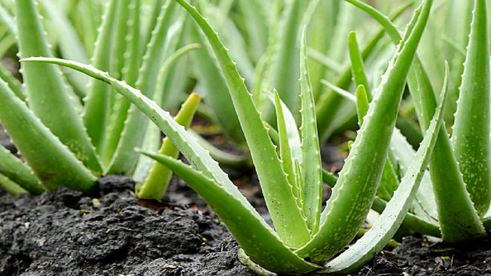
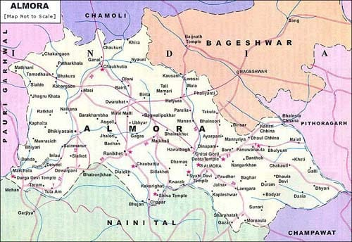

Aloe Vera, known for its healing and skincare properties, is one of the most versatile and in-demand herbal plants. Grown abundantly in Almora, this succulent is not only used in traditional remedies but has also become a key ingredient in modern cosmetics, pharmaceuticals, and wellness products. Almora's clean mountain air, mineral-rich soil, and favorable climate contribute to the cultivation of high-quality, organically grown Aloe Vera. The plant is rich in vitamins A, C, E, and enzymes, and is commonly used for skin rejuvenation, digestion improvement, and immunity boosting. The thick, fleshy leaves contain a soothing gel that is used both internally and externally.
Aloe Vera cultivation in Almora has grown significantly in recent years due to increased awareness of its health benefits. Traditionally used in Ayurvedic medicine, local communities have been using Aloe Vera for generations to treat wounds, burns, and digestive issues. Its popularity among health-conscious consumers has led to the rise of small-scale organic Aloe Vera farms in Almora. The plant thrives in the mid-hill region of the Kumaon range, making it a perfect fit for sustainable agriculture. Its low water requirement and natural resistance to pests make it an environmentally friendly crop.
For inquiries or bulk orders, contact Almora Organic Collective at 1-(855) 400-3879 or email at
customerservice@aloderma.com.
You can also visit their official website at

- The name “Aloe” is believed to be derived from the Arabic word “Alloeh,” meaning “shining bitter substance.”
- Aloe Vera has been used for over 6,000 years — it was known as the “plant of immortality” in ancient Egypt.
- In Almora, Aloe Vera is sometimes used in traditional Kumaoni recipes and even fermented to create medicinal tonics.
- Aloe Vera was even used by Cleopatra and Nefertiti as part of their skincare routine!